DECK The Newsletter · sankettambare.in
At the end of every month the site gathers everything I ran, climbed, read and wrote into one issue, and I add a letter about what it meant. This is how that works, and what you can take from it.
Dear reader,
September's race climbed: the Satara Hill Half…
Satara hills and a second brain
To: you, the readerSeptember 2026
02 The problem
The site already records everything. A race goes into sports, a fort into treks, a book into books, a thought into microblog. Eight years of it, in one Postgres.
Nobody reads a table of fifty races. Races blur into each other, and books into shelves.
And /now, the page meant to tell the story of a month, had become a retyped copy of what the tables already held — typed by hand, so it drifted.
…but what did August mean?
03 The idea
Every race, trek, book, blog and short post logged that month, pulled straight from the archive. Nothing retyped, nothing forgotten.
A short letter on what it all meant — the part a list of links cannot say. The numbers are the month's own; the words are mine.
React to a section, vote on next month's question, rate the letter, or ask the archive about anything in it.
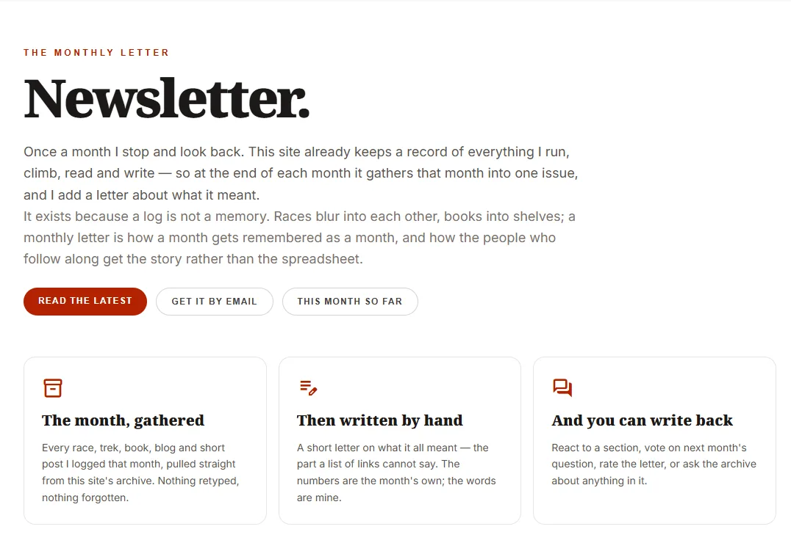
/newsletter — the hub says what the letter is and why, before any issue.04 What a reader gets
Postcard from
What the letter is, why it exists, the latest issue, every issue by year.
Postcard from
Headline, three numbers, the letter, a calendar of the month, then each section.
Postcard from
Letter in the atlas theme. Magazine in the classic theme.
Postcard from
A 1200×630 link card, a 1080×1350 portrait, an image per section and per item.
Postcard from
Reactions per section, a poll, a 1–5 rating with the part worth reading, a private reply.
Postcard from
"How did the Satara Hill Half go?" — a chat pinned to this issue and what it links to.
Postcard from
"Copy for Substack" in the admin pastes the whole issue, and Substack mails it.
Postcard from
Related issues from the same embeddings as the rest of the site. No model call.
05 Tour · the atlas theme
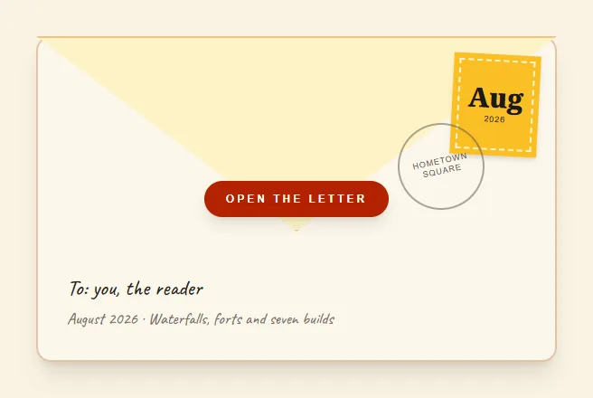
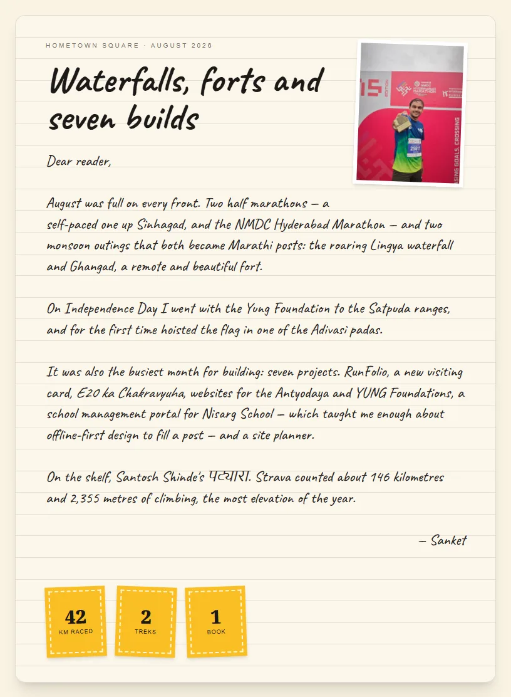
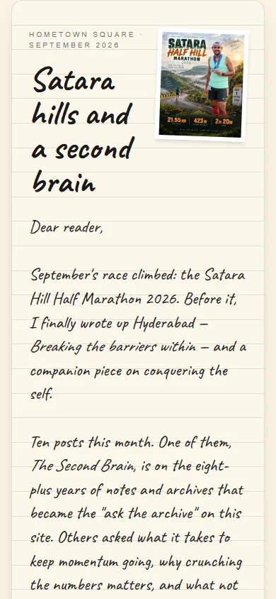
06 Tour · the atlas theme
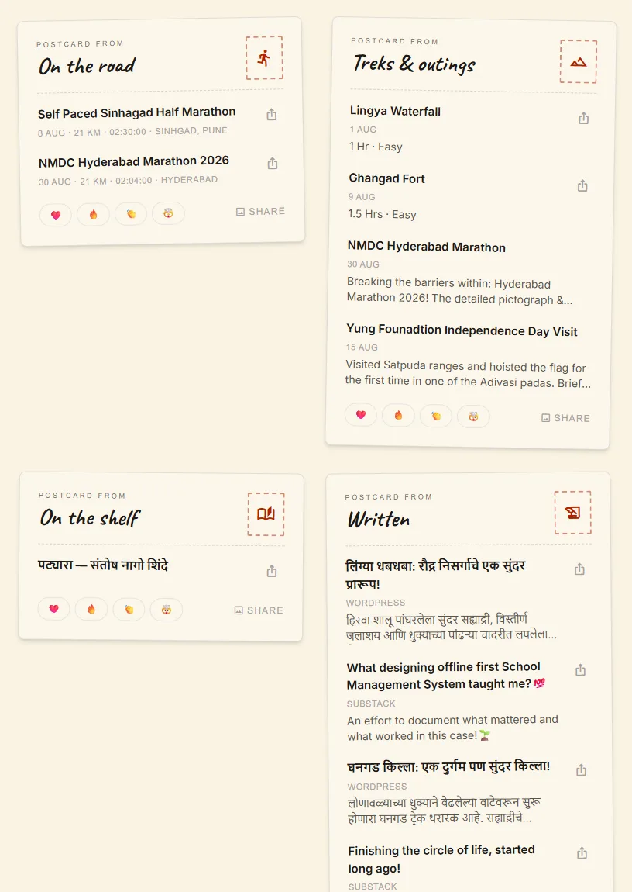
13 of 31 days had something in them
Built by issueDays() and monthGrid(). The share card draws the same grid, so the page and the unfurl can never disagree. Short posts fold after six behind "Show all N" — July had twenty.
07 Tour · the classic theme
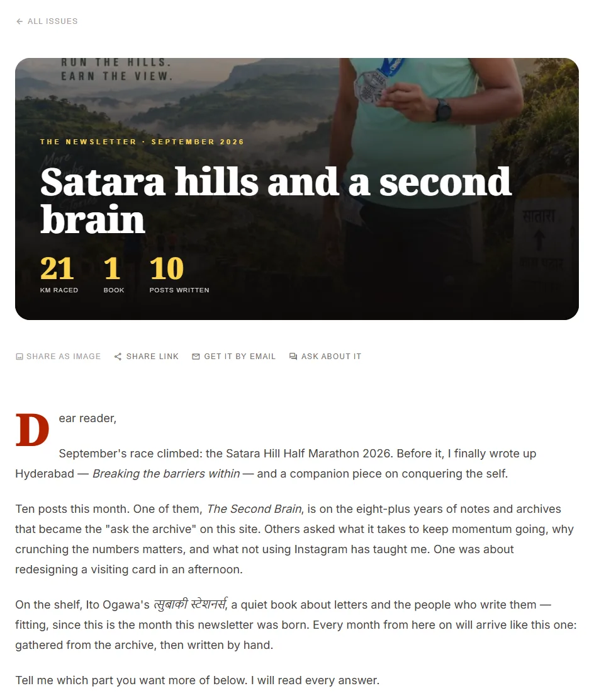
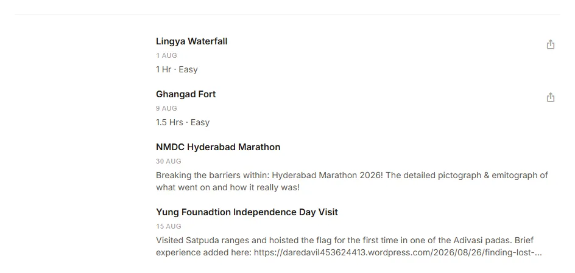
// src/pages/NewsletterIssue.js const model = issueModel(row); // sections, stats, days, refs… view === "atlas" ? <IssueLetter model={model} … /> : <IssueMagazine model={model} … />
Different in every pixel, one model underneath. The share cards, the OG card, the crawler meta and the /ask source read the issue through the same issueModel() — so nothing can disagree about what a month held.
08 The backfill
/now became the first twelve issues.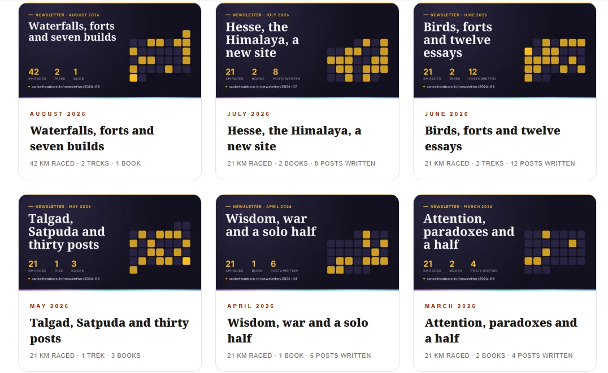
Also 68 blog posts, 34 site changes, 26 treks and outings, 16 books, 14 races and 9 projects. Every letter was written by Claude from its month's facts, then checked line by line.
09 The monthly workflow
You
/newsletter 2026-09in Claude Code — the project skill.
Script
npm run newsletter:draftMerges every dated row of the month into the issue. Idempotent.
Script
media/og/…2026-09.pngRenders the share card with satori and uploads it to Storage.
Script
2026-09.brief.jsonThe month's facts, the last two letters, last month's poll result.
Claude
2026-09.mdHeadline ≤ 6 words, a letter, next month's poll — from the brief only.
Script
--note 2026-09.mdWrites the prose back and re-renders the card with the headline.
You
/admin/now/monthsRead it, edit it, tick Publish on save.
You
Copy for SubstackPaste into Substack, press send.
Nothing is published by a machine. The script never touches published_at; only a person pressing Publish does.
10 The decision
That was the first question asked. Both, split along one line.
| A script only | A prompt → a new HTML page each month | Script + Claude skill (chosen) | |
|---|---|---|---|
| Data | Exact | Retyped by a model — can drift or invent | Exact |
| Design | One design | A new design every month | One design |
| Share meta, crawlers | Automatic | Hand-written tags | Automatic |
/ask indexing | Automatic | None | Automatic |
| Re-runnable | Yes | A different page each run | Yes |
| The letter | You type all of it | Model writes it | Model drafts from facts; you edit |
Deterministic pipeline for data. AI for prose only.
11 The human half
// knowledge_base/newsletter/2026-09.brief.json (trimmed) { "stats": ["21 km raced", "1 book", "10 posts written"], "sections": { "On the road": ["Satara Hill Half Marathon 2026"], "On the shelf": ["त्सुबाकी स्टेशनर्स — इतो ओगावा"], "Written": [ "Breaking the barriers within: Hyderabad…", "The Second Brain: Decoding the complex…", … 8 more ] }, "previousNotes": [ // the last two letters, for voice ], "lastPoll": null }
Dear reader,
September's race climbed: the Satara Hill Half Marathon 2026. … One of them, The Second Brain, is on the eight-plus years of notes and archives that became the "ask the archive" on this site. …
On the shelf, Ito Ogawa's त्सुबाकी स्टेशनर्स, a quiet book about letters…
Every letter was checked against its data before publishing. Across the twelve, that cut "the hilliest half marathon" and a date that was a guess — neither was in a brief.
12 Entity map
13 The data model
now_months row./now already had a row per month whose sections blob was a frozen copy of that month. A separate issues table would have been a second copy of the same month. Migration 0032 added only what makes a month publishable:
2026-09, the URL{q, options[]}-- who may read a month using (published_at is not null or is_current or public.is_owner())
// one item in sections.running { "event": "Tata Ultra Marathon", "distance": "50", "date": "2026-02-22", "ref": { "type": "sport", "id": 19 } }
The item opens its own page.
With its own image adapter.
Pinned into the issue's chat.
A snapshot, on purpose: editing a race next year does not rewrite last September's letter, and a deleted row leaves no hole in it.
14 Converging the data
parseContentDate() in monthDigest.js turns each into a local calendar date, and itemMonthKey() buckets it. Everything else — the page, the card, the script — trusts that one tested function.
new Date("09-08-2026").toDateString() // "Tue Sep 08 2026" — Ghangad was 9 August new Date(2026, 9, 1, 0, 30).toISOString() // "2026-09-30T19:00:00.000Z" // 00:30 IST on 1 Oct lands in September
15 What the backfill caught
sameRace() compares the name's core — years, "Kms", "run" stripped — plus the distance. The typed row keeps its words and adopts the archive's ref and real date.
13585 km in February
January had shown 84 km for one marathon.
47 books were imported into the database on one day, 13 June 2026, so they all looked like June reads.
370 books in June
Rule: five or more books added the same day are an import, skipped unless they carry a real finish date.
Nine cards with a duotoned photo came out at 500 KB – 1 MB. WhatsApp drops an image over about 300 KB (dashed line).
~145 KB each, now
Over the cap, the script re-renders the card without the photo — calendar only.
16 Share cards
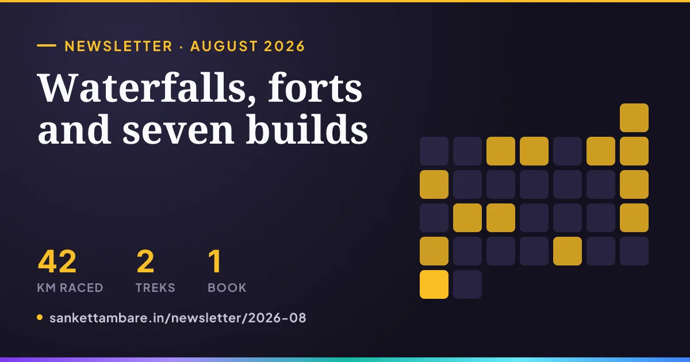
10 ms of CPU per request, against ~400 ms per render.
An earlier on-demand renderer returned error 1102 in production, and links unfurled with no image at all. So newsletter:draft renders the card under Node, with the same layout as every other card on the site, and uploads it as media/og/newsletter-2026-08.png — a flat name, so the middleware declares its size.
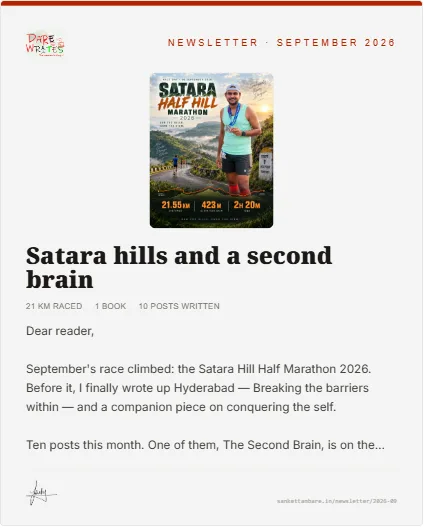
17 Feedback, privately
/api/newsletter-feedbacka Pages Function: hashes the real IP (salted, truncated), checks Turnstilenewsletter_feedback_add()service role only · validates · 40 writes per visitor per day · one vote eachnewsletter_feedback_summary()anyone may call it · counts only, never a reply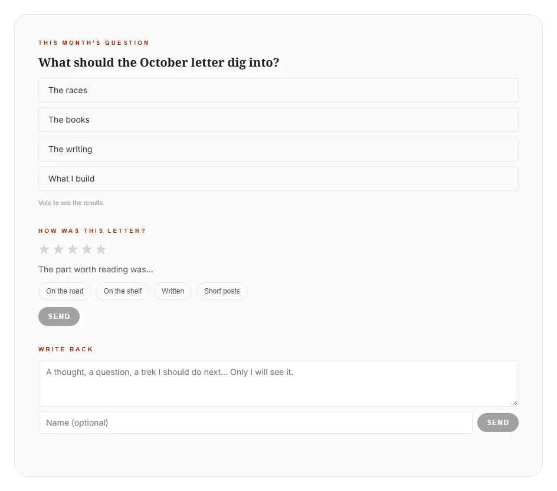
No email, no account. A new vote replaces the old one; a repeated reaction is a no-op. The browser remembers what you did so the buttons show it — courtesy, not enforcement. Postgres cannot see a client's IP through PostgREST, which is why writes go through the edge.
18 Ask about this issue
How did the race go?
Illustrative. Without focus, "the race" searches the whole archive and answers about whichever race ranks first.
// the issue page sends focus: { type: "now", id, refs } // functions/api/ask.js — read by key, beside the search const { picked } = selectChunks(…); const chunks = withFocus(focused, picked, match_count);
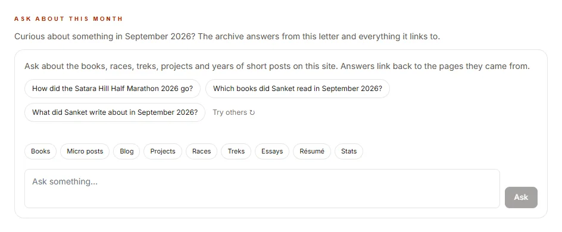
issueQuestions), so each one names something the archive can answer.Each issue is indexed as a letter chunk plus one chunk per section, at its own /newsletter/<slug> URL. Any page can pin itself this way.
19 If you build one
1
Every item already existed as a row. The newsletter is a view over the archive, not a second archive.
2
An issue keeps a copy of its month. Next year's edit does not rewrite this letter.
3
A script collects; a model drafts from its output alone; a person publishes. Never let a model be the source of a number.
4
Every source stores dates differently. One tested function, in local time.
5
Fixing a month is "add the missing race, run it again".
6
Cards are static files. On-demand rendering times out on free tiers.
7
Owner-only storage, counts-only reads, identity hashed at the edge, no accounts.
8
A ref on every item is what makes sharing, linking and asking work later.
9
Letter and Magazine share issueModel(). Presentation is cheap when the model is right.
20 Next
issueStats calls.over raw REST before it is published, because /now must show the current month. Publishing follows writing within hours.
WhatsApp caches unfurls by URL, so a re-rendered card can take a while to show on a link already shared.
at 40 writes per visitor per day, in the SQL.
21 Posted
The letters are at sankettambare.in/newsletter. Built in one Claude Code session: 58 files, about 3,800 lines, 551 tests passing — shipped as v20.0.0.
— Sanket